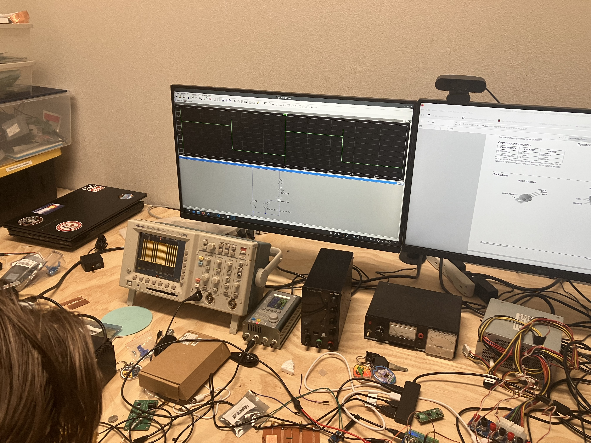

I lost a TV remote to a samsung smartish TV that is connected to the wifi, so I am able to use the open source project samsungctl running on my laptop to switch inputs. I would rather have a physical remote with buttons that can be used to control the TV instead of having to open up a laptop and typing cli commands. Fixing this pet peeve could be done in 2 ways: by reverse engineering the samsung infrared signals that are sent by an IR blaster from arduino, or by mimicing the same kind of packets sent by the open source library over wifi with an esp32. I would make a couple of physical buttons to connect to either the arduino or the esp32 and then depending on the technology used, send the wifi commands or ir signal. The goal would be to build this for a budget of ~$10 because the universal remote costs $40 at bestbuy.
First, I tried capturing signals from the arduino kit IR remote and the IR receiver hooked up to an oscilloscope so I could make sure I understood the protocol and decode signals, and also have a way of testing whether the circuit I would later build was functioning correctly.
Then I used the database of IR Remote codes from the Linux Infrared Remote Control project to find the codes for the buttons I wanted to emulate.
I got an infrared LED that operates at 950nm from sparkfun and according to the data sheet it requires 100mA of current to operate. It took a lot of experimentation with a FET to drive the LED at the desired power. My first iteration only functioned at less than 12 inches away from the TV. I got more and more bold, eventually pushing the amperage through the LED to 200mA using a 10\(\Omega\) resistor. This worked, and now I was controlling my TV from across the room!
The next step was moving from a breadboard to a perf board and adding buttons to control various functions like volume and input as well as power. I also added a power voltage regulator board so that the arduino could be powered off a 9v battery and a switch is used to fully turn off the remote to save power. The final demo video can be seen here: